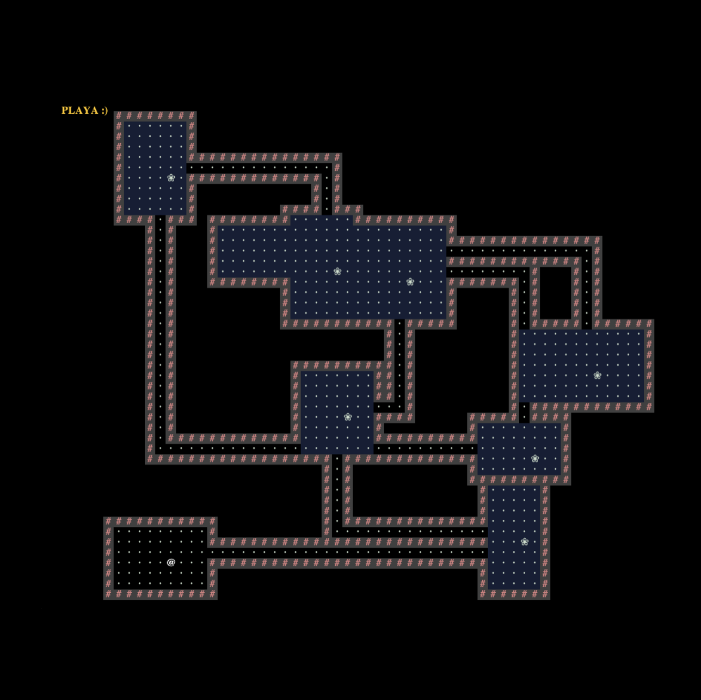
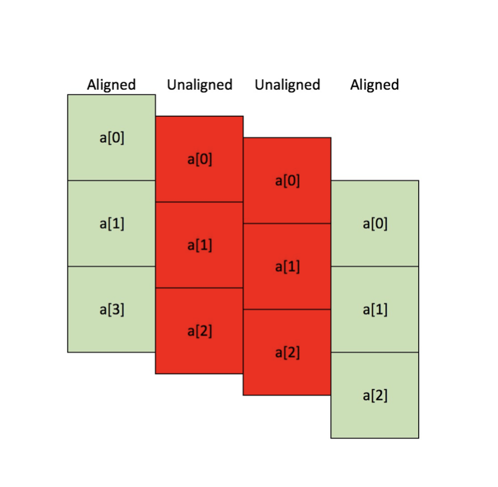

The World is Yours (Java)

• Designed and implemented 2D world generator using pseudo-randomness to generate distinct rooms, hallways, walls, sprites, and floors.
• Created user interface with menu screen and heads-up display to provide information on tiles and objectives.
• Developed deterministic interactive system allowing users to control on-screen avatar to interact with the world, with the ability to
save and load game progress using text files.
Multi-agent Pacman Search (Python)

• Incorporated Pacman Minimax, Alpha-Beta Pruning, and Expectimax search algorithms in Python to perform against probabilistic agents.
• Engineered dynamic state evaluation function using heuristic analysis and reduced algorithmic runtime in high-complexity scenarios.
Kachow (C, Python)

• Implemented and optimized 2D convolutions in C, leveraging Single Instruction Multiple Data operations and OpenMP for parallel processing.
• Created Open MPI coordinator for improved workload management, used Python, valgrind, and cgdb to debug and generate custom test cases.